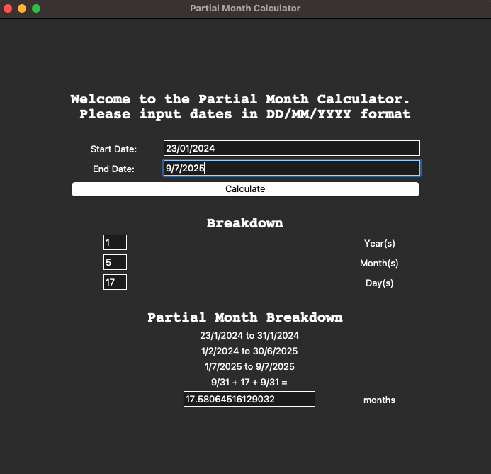

Personal Project: Partial Month Calculator
A simple calculator with a user-friendly UI to calculate partial months.
Why?
In my previous role where I was involved in tenancy management, it was vital to calculate the number of partial months (number of days in the month / total number of days in the month) precisely to be able to pro-rate tenancy contract dates in months correctly for billing purposes to make the customer does not overpay (or conversely underpay). For example the period 23 Jan 2024 to 9 July 2025 should equate to (9/31 + 17 + 9/31) months.
The team used to rely on manual calculations (i.e. counting) which was prone to human error.
As I started to pick up coding with Python, I figured why not try to solve this problem and reinforced what I learnt with my new found programming skills?
Objectives
The program would serve to give the breakdown of user-given dates (i.e. start date and end date), providing the user:
- Number of years, months and dates between the start date and end date and;
- Number of partial months between the start date and end date.
Implementation
The program makes use of the datetime, dateutil and calendar module for Python to achieve the date calculations needed. Tkinter is used to create a GUI for a better user experience. Pyperclip is used to enable copying of the calculation to the clipboard for a better user experience as well.
Demo Screenshots
Calculating partial months between 23 Jan 2024 to 9 Jul 2025.